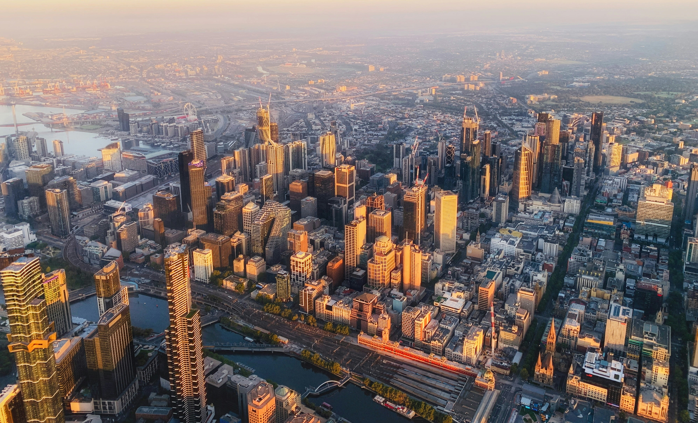

Sydney
Sydney är Australiens största och mest ikoniska stad, känd över hela världen för sin bländande hamn och spektakulära arkitektur. Här möts pulserande storstadsliv och avslappnad strandkultur på ett helt unikt sätt. Beundra det världsberömda Sydney Opera House och ta en hisnande promenad över den mäktiga Sydney Harbour Bridge. För den som älskar sol och vågsurfing väntar legendariska Bondi Beach bara en kort resa från centrum. Med sin fantastiska matscen, lummiga parker som Royal Botanic Garden och rika historia är Sydney en oförglömlig destination som erbjuder fantastiska upplevelser för alla typer av resenärer.

Melborne
Melbourne är Australiens kulturella hjärta, en dynamisk stad känd för sin kreativitet, stil och charm. Här trängs trendiga kaféer och undangömda barer i smala, kullerstensbelagda gränder som ständigt pryds av färgstark street art. Staden är ett absolut mecka för finsmakare, konstälskare och kaffeentusiaster. Hoppa på de ikoniska spårvagnarna till St Kilda för att njuta av havsbrisen, eller upplev stämningen på myllrande Queen Victoria Market. Melbourne är också landets otvistiga sporthuvudstad, med evenemang i världsklass. Med sin europeiska atmosfär, sitt rika nattliv och sin sofistikerade puls erbjuder Melbourne en urban upplevelse du sent kommer att glömma.

Brisbane
Brisbane är huvudstaden i soliga Queensland och bjuder på ett fantastiskt subtropiskt klimat med över 280 solskensdagar om året. Denna livliga stad är känd för sin avslappnade atmosfär och sitt härliga utomhusfokus, där den vackra Brisbane River utgör stadens naturliga och pulserande hjärta. På South Bank kan du strosa genom grönskande parker, njuta av utmärkta restauranger eller ta ett dopp i den unika, konstgjorda lagunen med vit sandstrand mitt i staden. Med sitt sprudlande nöjesliv i Fortitude Valley och sin perfekta placering mellan Gold Coast och Sunshine Coast, är Brisbane den optimala destinationen för att uppleva Australiens magiska östkust.

Perth
Perth är västkustens pärla och en av världens mest soliga och vackert belägna storstäder. Här omfamnas du av en fantastiskt avslappnad livsstil, milsvida vita sandstränder och den glittrande Swan River som snirklar sig genom det moderna centrumet. Ta en promenad i spektakulära Kings Park, en av världens största innerstadsparker, och njut av panoramautsikten över stadssiluetten. En kort båttur bort väntar idylliska Rottnest Island, hem till de charmiga och leende quokkorna. Med sin närhet till det bohemiska Fremantle, magiska solnedgångar över Indiska oceanen och ett blomstrande restaurangutbud, erbjuder Perth en oslagbar och genuint västaustralisk upplevelse.